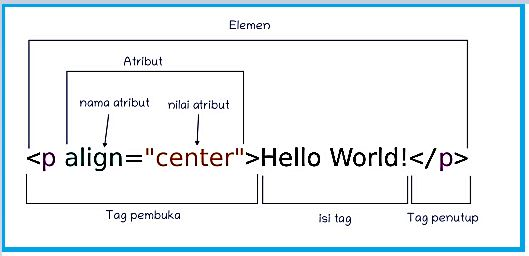

Belajar HTML
Selamat datang di laman belajar HTML. Kita akan secara bertahap mempelajarinya satu per satu mulai dari tahapan yang sederhana. HTML sendiri merupakan singkatan dari Hypertext Markah Langguage merupakan salah satu bahasa pengkodean atau pemograman yang digunakan untuk membuat halaman website. HTML dapat diibaratkan sebagai struktur dasar dari sebuah website. Jadi, ketika kalian ingin membuat sebuah website,
salah satu hal penting dan mendasar adalah dimulai dari mempelajari HTML.
Sebelum mempelajari lebih jauh mengenai bahasa pemrograman HTML, ada baiknya kita mengenali dulu istilah-stilah yang akan sering digunakan pada saat kita akan memnuat sebuah ffile HTMLantara lain:
- Tag adalah sebuah penanda awalan dan akhiran dari sebuah elemen di HTML. Tag dibuat dengan kurung sudut (<...>), lalu di dalamnya berisi nama tag dan kadang juga ditambahkan dengan atribut.
Tag biasanya ditulis berpasangan walaupun ada jenis tag yang tidak berpasangan, ada tag pembuka dan ada tag penutupnya. Tag penutup biasanya diawali < / >.
- Elemen dalam HTML adalah sebuah komponen yang menyusun dokumen HTML. Elemen kadang juga disebut sebagai node, karena ia merupakan salah satu jenis node yang menyusun dokumen HTML. Elemen terdiri atas tag pembuka, isi tag, dan tag penutup. Kadang juga ditambahkan beberapa atribut
- Atribut adalah kata kunci khusus yang berada di dalam tag pembuka. Atribut juga disebut sebagai modifier yang akan menentukan perilaku dari elemen.

Tahap Awal Membuat HTML
Langkah pertama yang harus kita lakukan adalah membuat file HTML. Kita dapat menggunakan aplikasi Notepad atau bagi para pemula bisa menggunakan bantuan aplikasi Visual Studio Code (lebih familiar dengan istilah VS Code) yang akan sangat membantu sekali dalam memunculkan elemen-elemen yang sesuai dengan prosedur baku dari HTML. Caranya adalah kita membuka laman baru baik di notepad ataupun
VS Code, kemudian kita simpan dengan extension dari HTML (.html).
Download Visual Studio Code
Struktur dasar file HTML
- < !DOCTYPE html > merupakan elemen tunggal berfungsi agar file yang kita buat dapat dikenali browser sebagai HTML5.
- < html lang="en" > atau < html lang="id"> merupakan elemen berpasangan yang berfungsi untuk menandai bahasa konten utama dari halaman web, < html lang="en" > jika kita ingin menggunakan Bahasa Inggris sebagai bahasa konten utamanya, dan < html lang="id"> jika kita ingin menggunakan Bahasa Indonesia.
- < head > merupakan salah satu elemen terpenting dari elemen atau tag HTML untuk mengidentifikasi header web yang berisi informasi tentang web. Tag ini merupakan tag berpasangan, diawali dengan < head >, diakiri tag < /head >.Diantara pasangan tag tersebut dianjurkan untuk membuat sub elemen yakni:
- < meta charset="UTF-8" > merupakan intruksi untuk browser agar menginterpretasikan karakter di halaman web
menggunakan UTF-8, yang merupakan standar universal untuk menampilkan teks dari hampir semua bahasa dengn benar.
- < meta name="viewport" content="width-device-width, initial-scale=1.0" > adalah intruksi HTML yang memberitahu browser bagaimana mengatur tampilan halaman web diperangkat yang berbeda sehingga akan membuat situs yang dibuka jadi lebih responsif. ( width="device-width" ) berfungsi untuk mengatur agar lebar tampilan halaman dapat menyesuaikan dengan lebar layar perangkat yang digunakan baik itu ponsel, tablet, laptop, atau dekstop. Adapun ( initial-scale="1.0" ) berfungsi untuk mengatur tingkat zoom awal halaman saat pertama kali dmuat,sehingga halaman akan ditampilkan 100% dalam ukuran aslinya.
- < title > merupakan elemen berpasangan dengan < /title > yang berfungsi memberikan nama laman web yang nantinya akan kita buka
- < body > merupakan elemen berpasangan dengan < /body > sebagai tempat kita membuat konten dari laman yang akan kita tampilkan
- < /html > merupakan elemen penutup yang mengakhiri seluruh struktur HTML. Semua elemen lain harus berada di dalam tag ini. Tag ini memberi tahu browser bahwa seluruh konten yang ada di dalamnya adalah bagian dari halaman HTML. Bersama dengan tag pembuka < html lang=" " >, tag penutup ini menciptakan struktur dasar untuk semua halaman web, mengapit bagian < head > dan < body >.
Mengenal beberapa jenis Tag HTML yang sering digunakan
Selain tag yang menjadi struktur dasar dari file HTML yang sudah dibahas di atas, masih terdapat banyak tag HTML lainnya dengan berbagai fungsinya. Berikut jenis-jenis Tag beserta fungsinya yang paling sering digunakan:
- Tag HTML Format
- < em > : untuk menekankan teks tertentu dalam suatu paragraf, biasanya ditampilkan miring
- < b > : untuk menebalkan teks
- < i > : untuk membuat teks miring tanpa makna tambahan atau penekanan
- < u > : untuk mengatur garis bawah teks
- < sub > : untuk membuat teks lebih rendah dari baris teks normal
- < sup > : untuk membuat teks lebih tinggi dari baris teks normal
- Tag HTML Link
- < href > : untuk menunjukkan link tujuan ketika diklik
- < target > : untuk menentukan dimana halaman web yang ditautkan akan dibuka
- < rel> : untuk menentukan hubungan antara halaman yang ditautkan dan halaman saat ini
- Tag HTML List
- < ol > : untuk membuat daftar yang berurutan dengan nomor
- < ul > : untuk membuat daftar tidak berurutan, yakni dengan bullet points atau simbol
- < dl > : untuk membuat daftar definisi yang terdiri dari istilah dan definisinya
- Tag HTML Media
- < img > : untuk menyisipkan gambar ke dalam halaman web, bisa dengan tambahan atribut src dan alt
- < audio > : untuk menyisipkan file audio yang dapat diputar di halaman web
- < video > : untuk menyisipkan file video yang dapat diputar di halaman web
- Tag HTML Table
- < table > : untuk mendefinisikan keseluruhan tabel
- < tr > : untuk membuat baris dalam tabel
- < td > : untuk mendefinisikan sel data dalam baris tabel
- < col > : untuk membuat gaya pada satu kolom dalam tabel
- < thead > : untuk membantu dalam mengatur informasi header tabel
- Tag HTML Form & Input
- < form > : untuk mendefinisikan keseluruhan formulir di halaman web
- < input > : untuk menyediakan berbagai jenis elemen input seperti teks, tombol, dan checkbox dengan tambahan atribut type
- < label > : untuk memberikan label atau deskripsi, sehingga meningkatkan aksesibilitas dan membantu pengguna memahami tujuan elemen input
- < select > : untuk menyediakan menu dropdown
- < button > : untuk membuat tombol yang bisa diklik pengguna, contohnya untuk mengirim form
Daftar tag HTML lebih lengkapnya dapat anda baca disini
Mengenal beberapa jenis atribut HTML yang sering digunakan
Berikut jenis-jenis Atribut beserta fungsinya yang paling sering digunakan:
- class : Memberikan nama kelas untuk menata gaya elemen menggunakan CSS. Contoh: < p class="artikel" >
- style : Menambahkan gaya CSS langsung ke elemen. Contoh: < p style="color: blue;" >
- href : Menentukan URL (alamat) untuk tag tautan . Contoh: < a href="https://www.google.com" >
- src : Menentukan URL untuk gambar
 atau skrip lain. Contoh: < img src="gambar.jpg" >
atau skrip lain. Contoh: < img src="gambar.jpg" >
- alt : Memberikan teks alternatif untuk gambar jika gambar tidak dapat dimuat. Contoh:

Daftar atribut HTML lebih lengkapnya dapat anda baca disini
Mungkin untuk sementara saya cukupkan sampai disini dulu berbagi seputar HTML. Kalau ada waktu kita sambung lagi berbagi ilmu mengenai CSS key....